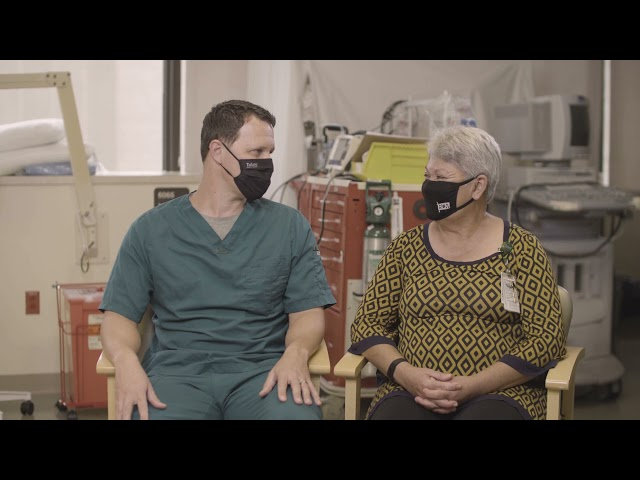
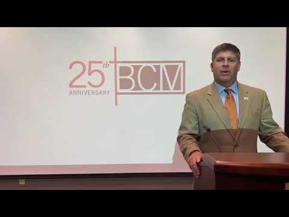
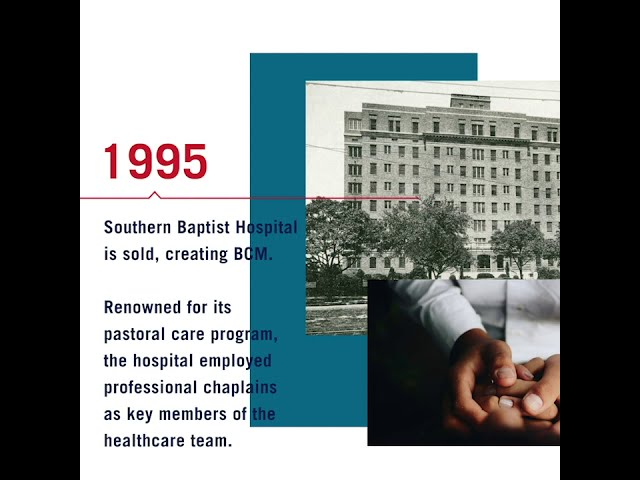
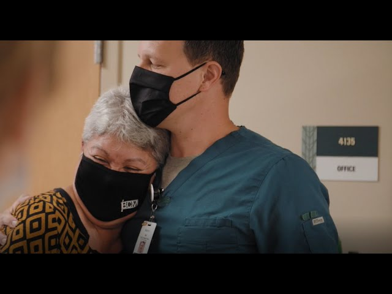
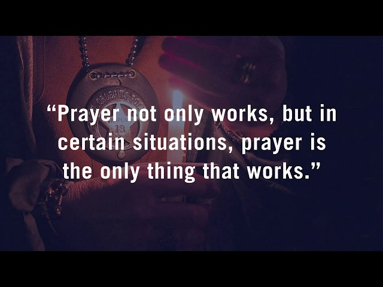

BCM Video Library
-

BCM Chaplaincy Chronicles, Episode 1
-
BCM's Faith Community Nurses
-

2021 Spring Transom Grantees Announced! FB Live Event
-

BCM’s 25th Anniversary
-

What it Means to Give to BCM
-

Chaplaincy Services
-
test stream
-

Baptist Community Ministries Live Stream